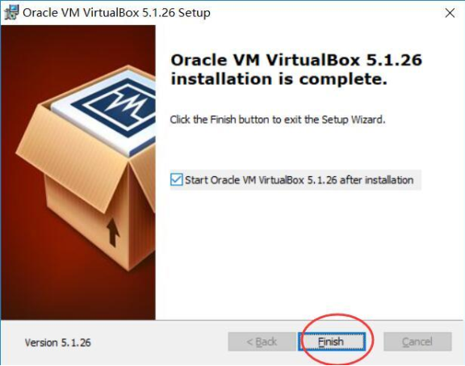
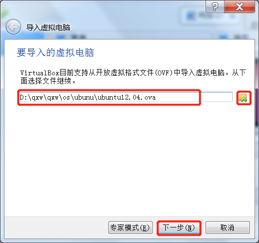
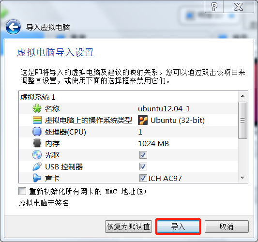
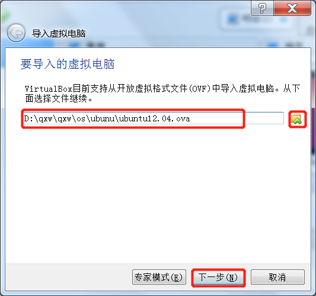
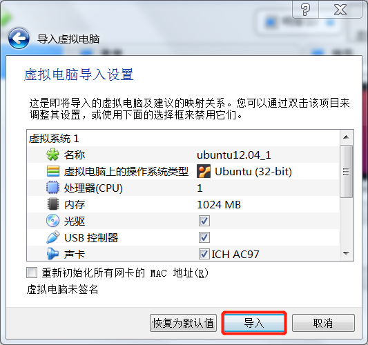
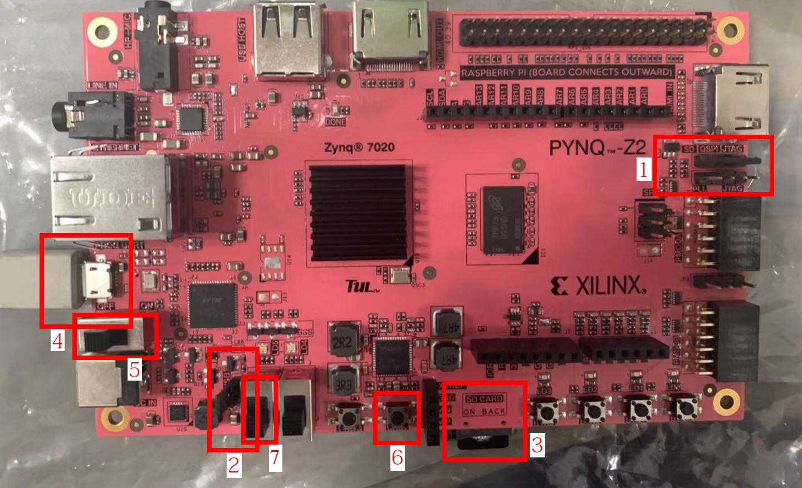
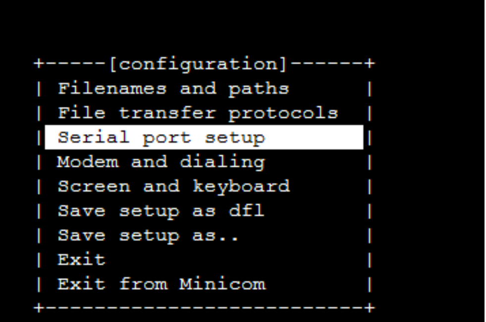
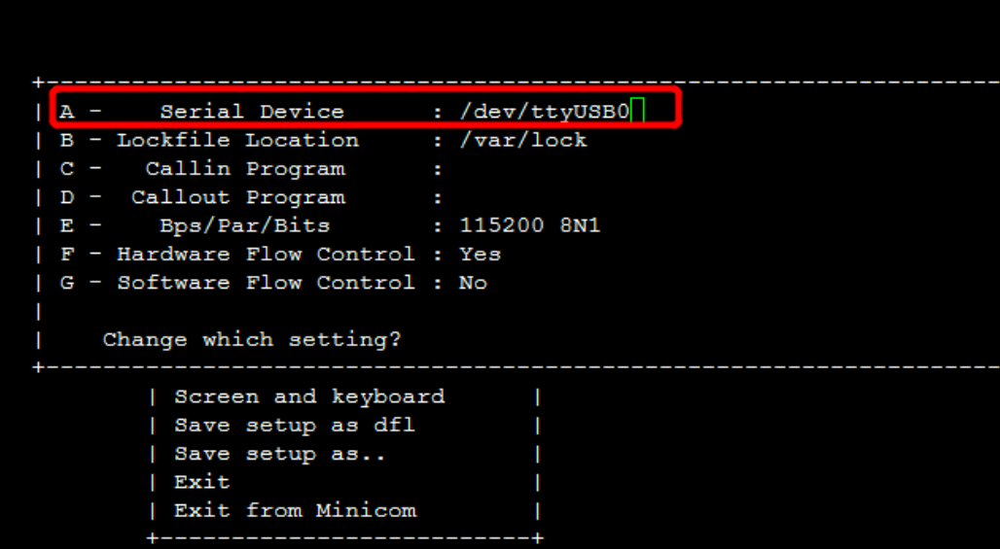
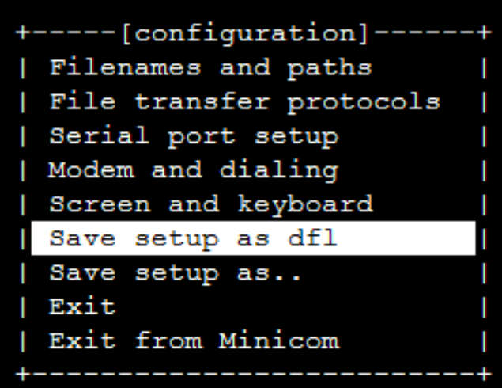
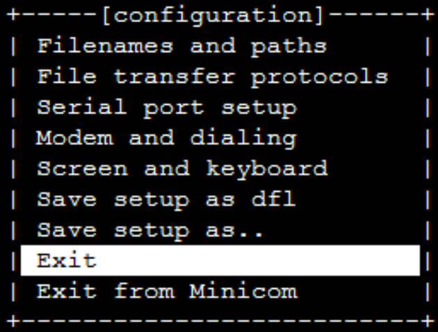

环境搭建
开发环境快速搭建
在课程中，我们会涉及到作为开发环境的Linux操作系统、交叉编译器 riscv-gcc、虚拟机软件 QEMU，以及基于 FPGA 的 RISC-V 开发板。
我们的开发语言以 C 语言为主，但绕不开一些基本的 RISC-V 指令集汇编语言，调试工具除了使用 printf 之类用于打印的函数外，一定要熟悉 gdb 的断点与寄存器查看的功能，整个工程要通过 git 工具进行管理等等。
如果这些工具已经把你弄得有点晕头转向，那么一定要花点时间耐心地看看 Project 0 的相关知识，因为这些工具是操作系统开发的标准配置，特别是调试工具等。 如果不能用好工具，开发操作系统可能会寸步难行。
看到这么多要学的工具用法和准备知识，也不要害怕，边学边用是我们的法宝。让我们开始吧。
为了让大家快速完成开发环境的搭建，我们已经将开发所需的环境集成到我们所给的 VirtualBox 虚拟机镜像中，同学们只需要安装完成 VirtualBox，导入我们所给的镜像，并简单配置一下即可。当然，我们也在附录中给出了手动配置环境的具体流程，感兴趣的同学可以了解一下。
关于环境搭建所需的工具，我们已经拷贝到了发给大家的 SD 卡中。此外，我们也将工具上传到了百度云中通过网盘分享的文件：
OS研讨课2025 链接:https://pan.baidu.com/s/1uJBhWIF3f_Io1YKPmlBK0g 提取码: ucas
Windows实验环境搭建
这一节主要讲解Windows下环境的搭建，搭建实验环境所需文件及描述见表 。
| 文件名称 | 说明 | 对应网盘目录 |
|---|---|---|
| VirtualBox_7.1.10_169112_Win.exe | VirtualBox windows安装包 | Windows_virtualbox |
| UCAS_OS_2025.ova | 为RISC-V版本实验准备的VirtualBox虚拟机镜像 | 已有交叉编译环境的镜像 |
| Oracle_VM_VirtualBox_Extension_Pack-7.1.10.vbox-extpack | VirtualBox拓展包 | Windows_virtualbox |
首先，需要安装VirtualBox虚拟机。右键打开菜单，选择**以管理员身份运行**。按照安装向导的提示一步步完成安装即可。完成后打开虚拟机软件（如图 所示）。
完成VirtualBox的安装后，需要再进一步安装VirtualBox的扩展包。VirtualBox扩展包主要用于增强VirtualBox的USB 2.0、USB 3.0、摄像头等设备的支持，可以提高部分设备的性能。安装方法为：运行VirtualBox->管理->全局设定->扩展->选择扩展包目录->安装->重启。过程如图所示。



Note
VirtualBox 最早由 Sun Microsystems 公司开发并以 GPL 协议开源。在 Oracle 收购 Sun 后，VirtualBox 主体部分仍以 GPL 协议开源的，但一些增强功能以采用 PUEL 协议的 Extention Pack 的方式提供。该协议规定，可以出于个人和教育目的免费使用 Extention Pack。商业用途需付费购买许可。
之后，请按照下一节的说明，将虚拟机导入，导入后就可以使用我们预先制作好的 Ubuntu 虚拟机中的环境，开始操作系统实验了。
导入虚拟机
VirtualBox 导入虚拟机的方式在不同平台上都是相同的，这里以 Windows 上导入虚拟机镜像为例。过程如图 所示。RISC-V 版本实验环境采用 Ubuntu Server 20.04，文件名为 UCAS_OS_2024.ova。请注意选择正确的虚拟机镜像进行导入。
我们预先配置好的镜像，用户名是stu,密码是123456。
 



Linux实验环境搭建
建议在 Linux 下也安装 VirtualBox ，然后按照 上一小节 的内容直接导入我们准备好的虚拟机。我们准备的虚拟机上环境都已经配齐了。
当然，如果你不喜欢虚拟机，我们也欢迎大家直接在 Linux 系统上配置整套环境。接下来，我们会介绍一下如何在 Linux 下自行构建交叉编译工具链，并配置相关开发环境。这也是我们为虚拟机镜像配置相关环境的过程。
首先，安装 minicom 。一般直接使用包管理器安装即可。
在Ubuntu/Debian/Deepin等系统下
$ sudo apt-get install minicom
在Fedora/CentOS等系统下
$ sudo yum install minicom
接着，安装构建交叉编译工具链所需依赖。
在Ubuntu/Debian/Deepin等系统下
$ sudo apt-get install autoconf automake autotools-dev curl libmpc-dev libmpfr-dev
$ sudo apt-get install libgmp-dev gawk build-essential bison flex texinfo gperf
$ sudo apt-get install libtool patchutils bc zlib1g-dev libexpat-dev
在Fedora/CentOS等系统下
$ sudo yum install autoconf automake libmpc-devel mpfr-devel gmp-devel gawk bison
$ sudo yum install flex texinfo patchutils gcc gcc-c++ zlib-devel expat-devel
最后，解压我们提供的 riscv-gnu-toolchain.zip ，构建交叉编译工具链。
在解压出来riscv-gnu-toolchain同级目录下建立一个用于构建的目录
$ mkdir rv64-gnu-tools
进入新建立的目录
$ cd rv64-gnu-tools
构建并安装到/opt/riscv64-linux
$ ./configure --prefix=/opt/riscv64-linux
$ sudo make linux -j4
注意，-j4代表4线程编译，你的机器几个核就设置使用几个线程，请自行调节该参数。
为了方便，可以将为工具链配置环境变量。
打开文件.bashrc
$ vi ~/.bashrc
按i进入编辑模式，在文件末尾添加语句：export PATH=/opt/riscv64-linux/bin:$PATH
按ESC退出编辑模式，按:wq保存退出vi。
导入环境变量
$ source ~/.bashrc
$ riscv64-unknown-linux-gnu-gcc -v
Using built-in specs.
COLLECT_GCC=riscv64-unknown-linux-gnu-gcc
COLLECT_LTO_WRAPPER=/opt/riscv64-linux/libexec/gcc/riscv64-unknown-linux-gnu/
8.3.0/lto-wrapper
Target: riscv64-unknown-linux-gnu
Configured with: /home/wangluming/os_course/riscv-gnu-toolchain/riscv-gcc/configure --target=riscv64-unknown-linux-gnu --prefix=/opt/riscv64-linux --with-sysroot=/opt/riscv64-linux/sysroot --with-system-zlib --enable-shared --enable-tls --enable-languages=c,c++,fortran --disable-libmudflap --disable-libssp --disable-libquadmath --disable-nls --disable-bootstrap --src=/home/wangluming/os_course/riscv-gnu-toolchain/riscv-gcc --enable-checking=yes --disable-multilib --with-abi=lp64d --with-arch=rv64imafdc --with-tune=rocket 'CFLAGS_FOR_TARGET=-O2-mcmodel=medlow' 'CXXFLAGS_FOR_TARGET=-O2 -mcmodel=medlow'
Thread model: posix
gcc version 8.3.0 (GCC)
RISC-V 的交叉编译工具链的编译在有些时候会依赖某些库的特定版本。如果构建过程中发生编译错误，可能是因为库版本不合适，具体哪个库有问题不好定位。笔者曾在 CentOS 7 和 Ubuntu 20.04 上测试，这两个发行版自带的库版本是可以正常编译的。webIDE 上的环境是 Ubuntu 的，所以可以正常安装。
除了安装交叉编译工具链之外，为了方便调试，还推荐大家使用 QEMU 模拟器，安装的方法类似，使用我们提供的安装包编译 QEMU 和 U-boot 即可。需要注意的是，我们在 start-code 中给出了 Makefile，里面指定了默认的 QEMU 路径，需要大家在安装的时候也构造出相同的路径，或者根据自己的喜好，把 Makefile 里面的默认路径改掉。
开发板及工具介绍
实验采用 XILINX PYNQ Z2 开发板，开发板的处理单元由 ARM 核部分和 FPGA 部分构成。在开发板上电时，首先由 ARM 核启动板卡初始化相关程序，其根据板卡上标有 SW1 的开关的状态，将 RISC-V 处理器核烧入 FPGA。之后，RISC-V 核加载我们编写的程序。
实验中使用的 RISC-V 核为升级后的双核 Nutshell。NutShell 为国科大第一届“一生一芯”计划的产出，已在 Github 等网站上开源，我们升级并维护的版本为 NutShell-DASICS ，感兴趣的同学可以自己搜索了解。在 PYNQ 板卡上，时钟主频为 50MHz。后续的实验中可以通过不同的命令启动单/双核 Nutshell。 由于资源限制，我们提供的 RISC-V 核心均没有浮点模块。
开发板的启动
我们使用的开发板如图所示。请按照图示的顺序配置并使用开发板。
- 将开发板设置为 SD 卡启动
图示中 1 处的跳线设置的是开发板的启动方式。PYNQ-Z2 支持从 SD 卡、QSPI 和 JTAG 启动。我们将跳线插到最左侧，选择用 SD 卡启动。请保证跳线跳在了最左侧的两个针脚上面。
- 设置电源选项
图示中的 2 处的跳线设置的是开发板的供电方式。PYNQ 支持外部电源供电和 Micro-USB 接口供电。我们把跳线跳在 USB 这个选项上（靠上侧的两个针脚），用 Micro USB 接口直接供电。 - 插入 SD 卡
插入根据节所述制作好的 SD 卡。注意插入方向，不要插反。
- 插入 Micro-USB 数据线
Micro-USB 线一端连接图示 4 位置，一端连接笔记本的 USB 口。PYNQ-Z2 开发板和电脑通过 Micro-USB 线连接。连接好后，Micro-USB 线同时承担供电和通信的功能。
- 打开电源开关
打开图示 5 位置的电源开关，开发板上红色指示灯亮起，之后绿色的 Done 信号灯亮起。之后代表 NutShell 的 LED 灯 LD0 亮起 1 秒后熄灭，随后 Done 信号灯重新亮起，表明开发板已开始工作。
- RESET 键
图示 6 位置为 RESET 按键，板子上标记 SRST 字样。按下该按键会让开发板重置。如果需要开发板从加电开始重新再执行一遍，可以按该按键。

minicom 的配置
在主机端，我们使用 minicom 和开发板通信。启动 minicom 的方法为：
需要把 Serial port setup 中的 Serial Device 设为 /dev/ttyUSB1。同时，确保 Bps/Par/Bits 项的值为 115200。过程如图所示。注意：与图中不同，Serial Device 需要设置为 /dev/ttyUSB1。
   
将SD卡插入开发板（确保第一个分区中包含了BOOT.BIN等文件），在连接并启动开发板并打开minicom后，按下重置键（SRST）。如果设置正确，可以看到终端输出RISC-V启动环境的信息。
Note
如果直接打开了minicom，没有加-s选项，也可以在minicom界面中用键盘进行操作，操作方法是先按Ctrl-A，再按相应按键。例如：Ctrl-A X退出minicom，Ctrl-A Z显示帮助。